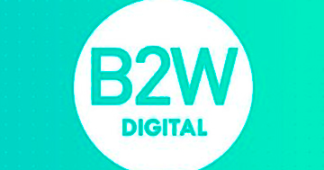

Marketplaces que já trabalhei


Já trabalhei com Marketplace que é uma plataforma digital onde vendedores e compradores se conectam para realizar transações de produtos ou serviços. Diferente de uma loja online tradicional, que é administrada por uma única empresa, o marketplace reúne múltiplos vendedores, oferecendo uma vasta variedade de produtos em um único local virtual. Exemplos populares de marketplaces incluem AmazonB2W,Magalu,Shoppe, Mercado-livre entre outros.